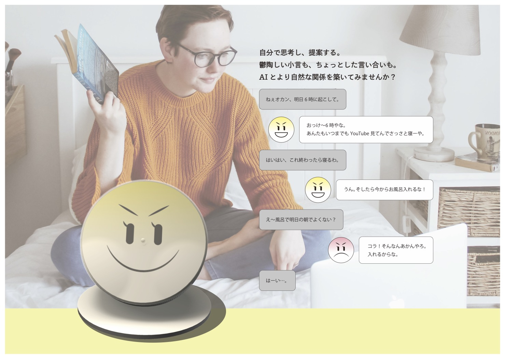
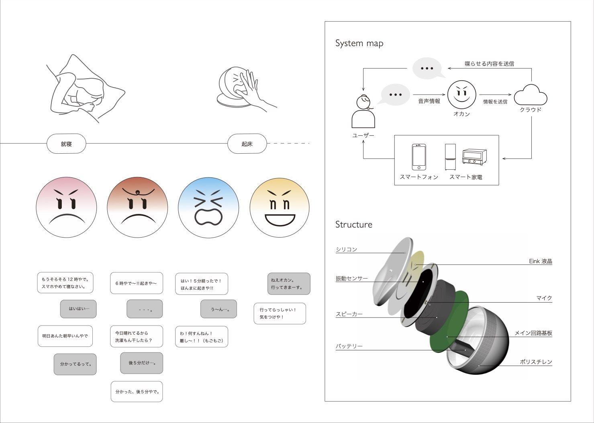
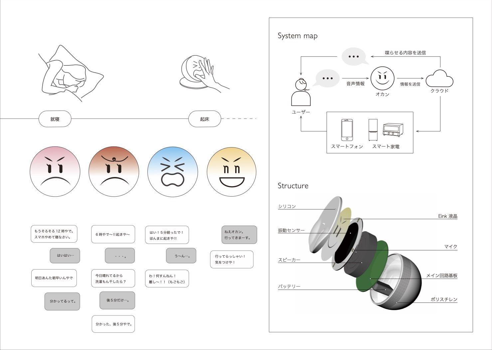
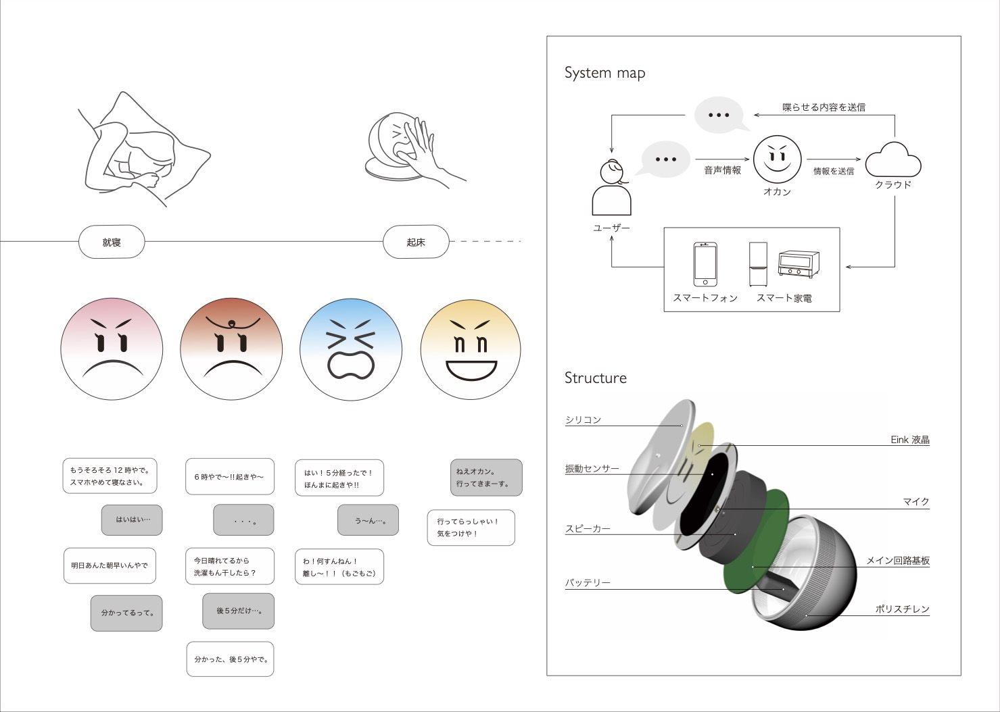
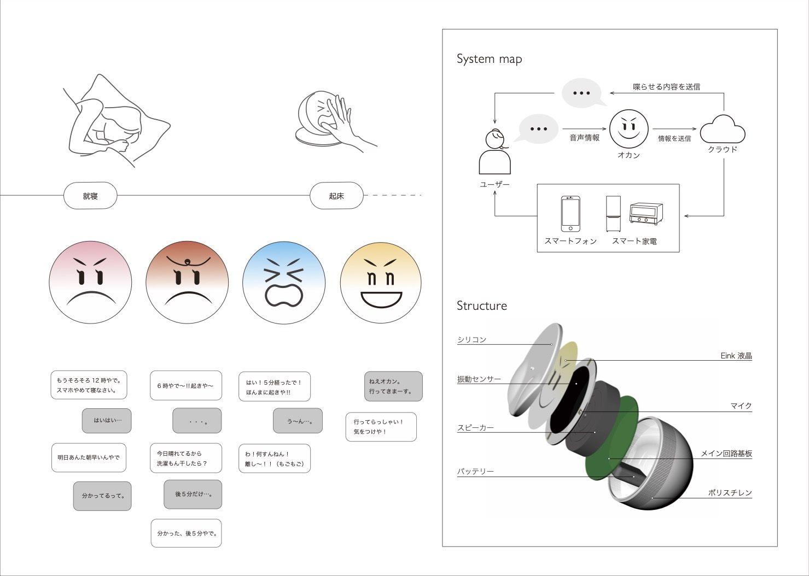

2018.6-8
Okan おかん

お母さんのようなスマートスピーカー
お母さんのように叱ってきたり、方言でやり取りしたり。スマートスピーカーだけどお節介でちょっとめんどくさい存在。 そんな存在とのコミュニケーションを通じた生活の提案。

 


2018.6-8
お母さんのように叱ってきたり、方言でやり取りしたり。スマートスピーカーだけどお節介でちょっとめんどくさい存在。 そんな存在とのコミュニケーションを通じた生活の提案。
